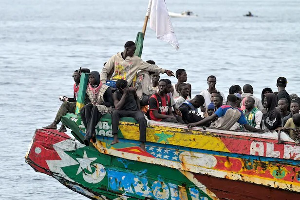

Spanish rescuers brought 1,488 migrants ashore in the Canary Islands on Saturday, the highest number in a single day since 2020, according to the EFE news agency, which cited Spain’s maritime rescue service. The people were rescued from 14 boats, as arrivals from West Africa have surged since October.

The previous one-day record was 1,461 people on 7 November 2020, maritime rescue officials said.
Most boats landed on El Hierro
Twelve of the boats arrived at El Hierro, one of the smallest and least populated Canary Islands. One boat reached Gran Canaria and another reached Tenerife. One boat carried 240 people, including 12 women and 36 children. Authorities said most of the people came from Senegal, Gambia and Guinea Conakry.
Spain’s territorial policy minister, Angel Victor Torres, was due to visit El Hierro on Sunday to discuss the surge. El Hierro declared an emergency earlier this month over the influx of arrivals, according to Al Jazeera.
A deadly route
The Atlantic route from West Africa to the Canary Islands is one of the world’s deadliest migration crossings. Migrants travel in overcrowded boats across rough seas and strong currents. Arrivals usually pick up in the autumn months, when sea conditions are generally calmer.
Overall arrivals still lower
Despite Saturday’s record, arrivals to the Canary Islands between January and 31 October were down 5.5% compared with the same period last year, government data show. Reuters reported that the sharp rise since October has put extra pressure on reception and emergency services, especially on the smaller islands.